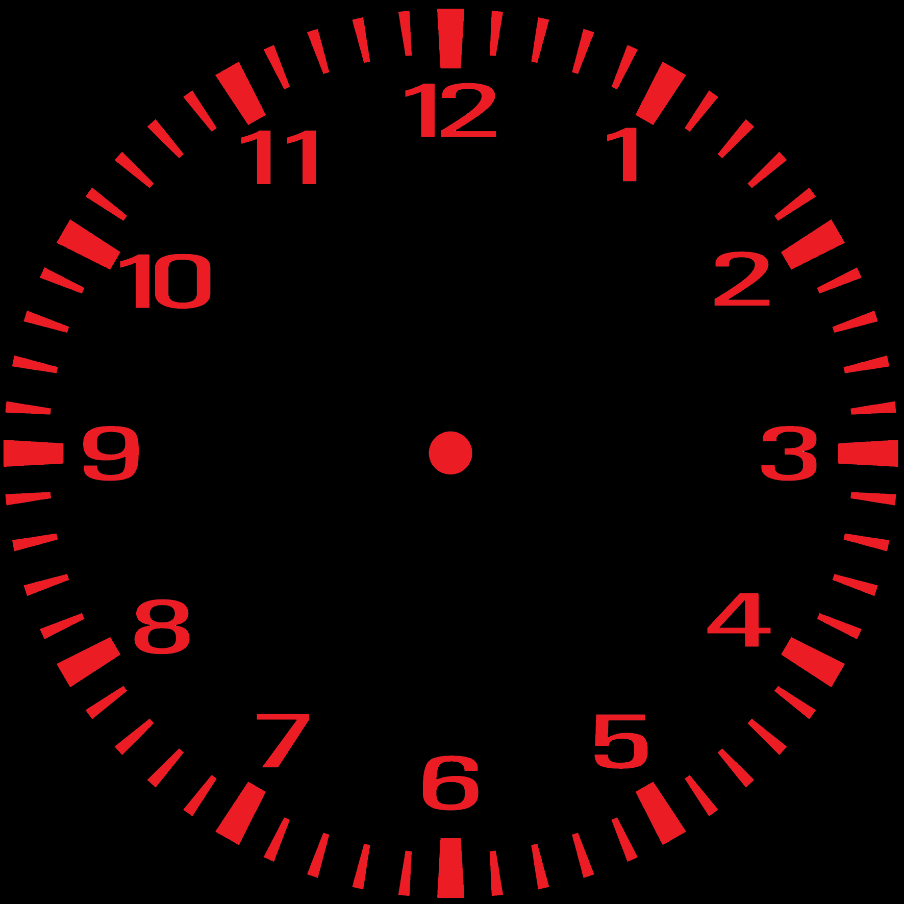

The second page is always a bit small. But sometimes quality > quantity even if quality = low.
This means quality > low. However, I would like the quality to be higher.
That's why I make quantity = high so that quality > high.
To do this, I import a text from Chatgpt:
Quantum theory
Quantum theory, also known as quantum mechanics, is a fundamental branch of physics that describes the behavior of matter and energy at the smallest scales, particularly on the level of atoms and subatomic particles. It's a remarkably successful and accurate framework for understanding the behavior of these tiny entities, but it's also profoundly different from classical physics. Quantum theory revolutionized our understanding of the physical world and has led to the development of technologies like transistors and lasers, among others. Let's delve into quantum theory in greater detail.
At the heart of quantum theory is the idea that energy and matter are quantized, meaning they exist in discrete, indivisible units called quanta. This contrasts with classical physics, where quantities are continuous and can take on any value. Max Planck, in the early 20th century, introduced the concept of quantization when he formulated Planck's law, which described the radiation emitted by a black body. He proposed that energy can only exist in multiples of a fundamental constant, now known as Planck's constant (h).
One of the key principles of quantum theory is wave-particle duality. It suggests that particles like electrons and photons can exhibit both particle-like and wave-like behaviors. This means that they can act as discrete, localized particles in some situations, and as spread-out waves in others. The behavior of these particles is described by wave functions, which represent the probability of finding a particle in a particular state.
Uncertainty principle, formulated by Werner Heisenberg, is another fundamental concept in quantum theory. It asserts that it's impossible to simultaneously measure certain pairs of properties, such as an object's position and momentum, with arbitrary precision. The more accurately we know one property, the less accurately we can know the other. This inherent uncertainty challenges our classical intuition, where we assume precise knowledge of both position and momentum.
Quantum theory also introduces the concept of superposition, where particles can exist in multiple states simultaneously. This concept is famously illustrated by Schrödinger's cat, a thought experiment where a cat inside a box is simultaneously considered both alive and dead until observed. Superposition is a crucial aspect of quantum computing, where quantum bits (qubits) can exist in multiple states, enabling potentially powerful computational capabilities.
Entanglement is another fascinating phenomenon in quantum theory. When two particles become entangled, their properties become correlated in such a way that measuring one particle instantaneously determines the state of the other, regardless of the distance between them. Einstein referred to this as "spooky action at a distance." While it seems counterintuitive, entanglement has been experimentally verified and is the basis for technologies like quantum teleportation and quantum cryptography.
Quantum theory has played a pivotal role in our understanding of the microcosmic world and has led to a plethora of practical applications, from lasers and transistors to quantum computers and secure communication systems. It challenges classical intuition, but its accuracy and predictive power make it an indispensable tool in modern physics. While quantum theory is complex and often perplexing, it continues to unlock new frontiers in science and technology.
11.10.2023 - ChatGPT